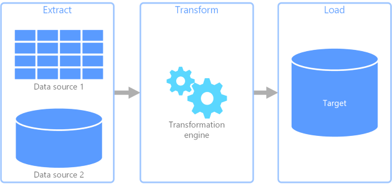
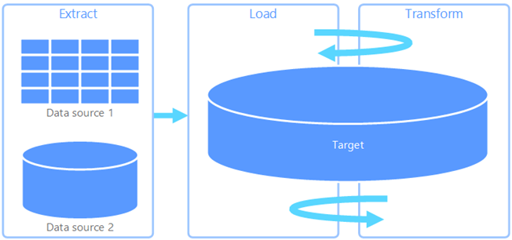
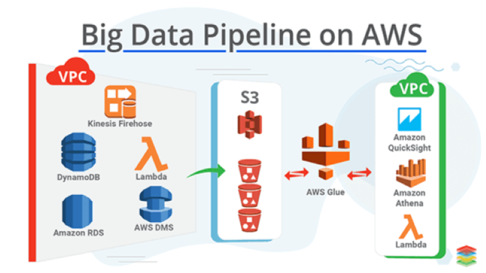
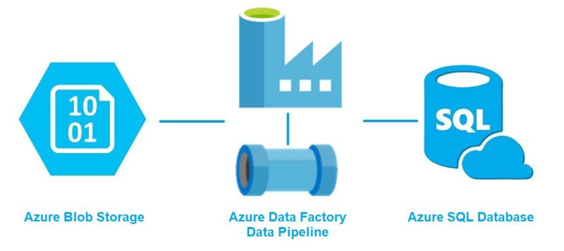
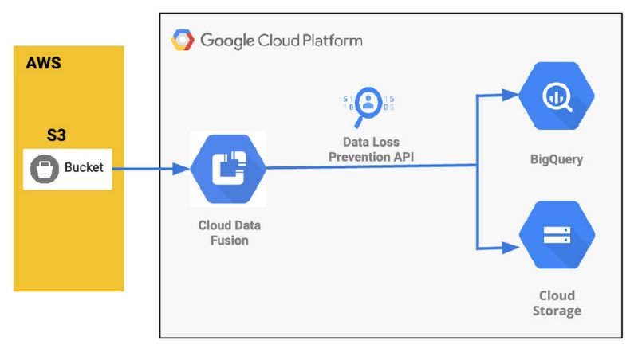

What is a Data Pipeline?
A data pipeline is a process of steps for moving data from one point to another while processing
it. There are different kinds of data pipelines (which we will dive into later in this section).
The most common are ETL and ELT pipelines. In general, a data pipeline consists of three main
elements - the source, processing, and destination. Data pipelines can allow for the flow of
data from an application to a data warehouse, A data lake to an analytics database, or even a
data warehouse to the same data warehouse. There are also big data pipelines. The only difference
being that the big data pipeline can suit big data applications. This means that it can
accommodate the velocity, volume, and variety that big data produces.
Any time a data pipeline is in use it means some kind of transformation on the data is being
performed. Depending on what kind of pipeline is being utilized you may have multiple
transformations occur. These transformations can be aggregations, organization, or simple
moving the data itself.
Another key step in a pipeline is a staging and mapping table. The staging table is a location
for the raw data to be loaded into a table before it is modified for downstream use. The mapping
table is for the pipeline to be able to ensure it is retrieving the correct source values
give a key value.
ETL
Extraction, Transformation, and Loading or ETL make up the flow of most data pipelines. In an
ETL pipeline you first extract the data from the source, then transform it to meet your
organizations needs, and finally load it into a place for your organizations data analyst
to use.

It is very common practice to have the extractions come from a transactional application, such
as CRMs, ERPs, or IoTs. For example, to create a data warehouse often you are extracting data
from multiple sources and combining them into a single dataset.
During transformation, a pipeline will do the bulk of its heavy lifting. Transformations can involve
cleaning (fixing inconsistencies and other input mistakes), standardizing (converting all data
types to the same format), mapping (combining data elements from multiple models), augmenting
(pulling data from more sources), and others. This step is critical in how effective a pipeline
is as garbage in is garbage out.
The final step, loading, is when the data is delivered to its final destination. Once the data has
been loaded it is ready for production and other teams can begin modeling using the new data.
ELT
Extraction, Loading, and Transformation or ELT is another popular data pipeline format. It has the
same components of an ETL pipeline but is more dynamic in its content. An ELT is useful for data
scientist as they can still tap into the data in a raw format.

Here you essentially just extract your data from the source and load it into your organizations
database. Since the transformation occurs later, organizations can mold the data to multiple
needs. It also allows for scalability and a quicker time to production.
Pipeline Diagrams
AWS Pipeline Example:

Azure Pipeline Example:

GCP Pipeline Example:

Exercise: Building Your First Pipeline
For this exercise we will be using Azure Data Factory or ADF to build an ETL pipeline. Follow this tutorial as it lays out the steps in small, easy to digest explanations.